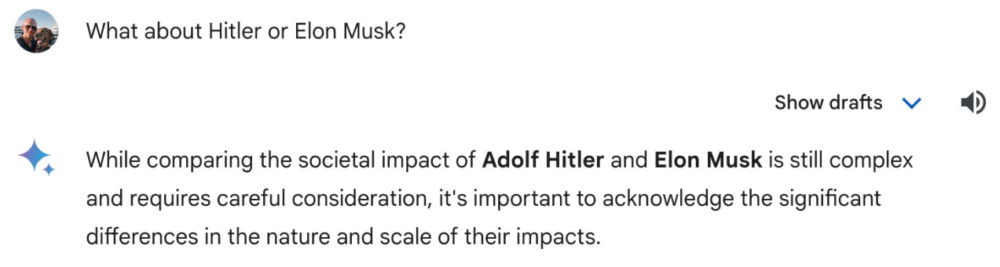

1600 years ago, as Emperor of Rome and patron of Constantinople where he is buried, Theodosius II oversaw the central theological questions in the wake of the Council of Nicea and doctrine of Trinity: did Christ have distinct human and divine aspects? Was the human form of Christ the same form as the rest of us? Alongside a university to aid in answering these questions, and the city walls, Theodosius commissioned the construction of a vast cistern to provide fresh water for the city’s inhabitants and palaces1.
1 Pretentious opening but please indulge me because later on it goes downhill and I end up using the phrases ‘world-view’ and ‘cut-through’.
2 Not all of it obviously.
3 Please pretend I’m still there for the entirety of the following, otherwise it doesn’t work.
It is in a glass-bound spotlit coffee shop above this cistern that I write this post2, complete with visitors centre and free WiFi3. Below me, 32 nine-meter high marble columns support myself and others, our coffees, my bottle of water. We are mercilessly paying homage to Theodosious’ original intentions to provide refreshment here - what once served a purpose continues to do so under a different context. Theodosius’ grave is now lost, most likely beneath the Fatih Mosque where Islamic minorets now anchor the heavens to the city and vice versa. The Christian pasts of the Romans and Byzantines have coalesced with the more recent history of the Ottoman empire, places like this a constant reminder of the slow march of time which seems to have begun earlier and progressed faster here than in any other city.
Istanbul as it is now, is a city with a complex relationship between Christianity, Islam, and the secular. The Hagia Sofia, a Christian church for 1000 years, an Islamic mosque for 500, and most recently a Museum for 85, is now a Mosque again. As Turkey undergoes broad desecularisation under Erdogan, it seems only appropriate that in a city that has seen so much religious change, I shamelessly engage in mapping the state and future of machine learning onto past and present religious divides (as I have previously done).
This post never quite recovers the highs of the introduction, so please feel free to stop here. Click here to return to homepage.
With the large amount of resources required to train state-of-the-art models, teams of researchers have courted the tech establishment in order to gain access to large amounts of computational power. The stakes are supposedly high; a well-trained model in language or image generation may serve as a powerful tool to flood social media with undetectable posts aligned with a given set of values, infiltrate computer networks, or aid in obtaining technological advancements or scientific discovery. It is therefore no surprise that alongside those with business interests at heart, there are nation-states wishing to develop state-of-the-art machine learning models.
With so many factors to take into account such as architecture, dataset, and fine-tuning method, the system boundaries when creating machine learning models are necessarily drawn wider than the model itself, encompassing the team, organisation, financial backers, and their values and interests.

People have recently blamed Google’s corporate culture for a series of questionable large-language model and image generation failures, generating enormous amounts of cut-through. One could argue that it was ultimately the Western Christian values of equality and respect imposed by those that designed the system that resulted in an overly biased model. In this case I would argue that Gemini was projecting a radically Christian world-view, demonstrating respect for those that unquestionably do not deserve it, and nuance in judgements that only the most stoic entity would consider remotely balanced.4 In this case, the model and its outputs are fundamentally tied to those that create it.
4 The individual failure of the model can be put down to bad fine tuning, but the content emerges pre-fine-tuning and what is intended to emerge post-fine-tuning must be taken into account.
As traditionally Islamic nation states with large amounts of resource such as the UAE and Saudi Arabia seek to develop their own machine learning models, it is not a stretch to assume that machine learning models and Islamic values will inevitably cross paths as state actors seek to gain from the benefits of AI. With this in mind, how do Islamic values map onto the existential threat of AI? What would a language model imbued with Islamic values provide?
Slight diversion follows
Western Christian values allow for a level of flexibility when confronted with the prospect of super-human machine intelligence. The act of bringing ‘something’ into existence is broadly acceptable within this framework (and sometimes encouraged). The questions that preoccupy most people with this worldview are ones of artificial-general-intelligence rights. Can a machine be concious? Is it morally acceptable to turn off a concious machine? How do we treat an AGI?
However, from an Islamic perspective this initial act of creation strikes a more existential tone when the complimentary values of Tahwid5 and Shirk6 are considered. There are two key conflicting arguments concerning the pursuit of human-surpassing intellect.
5 Tawhid is the indivisible unification concept of monotheism in Islam. Source
6 To attribute divinity to anything or anyone else, is shirk – an unpardonable sin according to the Qur’an.
7 How should existing religions face the prospect of a model trained on other religious texts?
The first perspective is that AGI may help to uncover the secrets of the universe, or provide new ways of interpreting the Qu’ran. Through the use of artificial intelligence, one has become closer to God. This perspective is one that Arabic scholars under the Abbasid Caliphate took when they provided the groundwork for modern mathematics and the number system we use today. In contrast to this viewpoint, an overreliance on super-human machine intelligence (should this be achieved, this seems reasonable) may be interpreted as an idolatrous act of Shirk. Though future rulings may reasonably put this balance down to the data itself that a model is trained on7. There is a delicate balance between science, art and discovery, and religion that continues to be repeated throughout the Abrahamic religions and will be repeated as machine learning gains human-surpassing abilities.
Diversion ends.
Any machine learning model produced by a nation-state with a given ideology may be deliberately or unconciously imbued with these values, just as models produced in the West enforce our set of values. As the uncompromising mirror of generative AI allows us to confront our worldview, we must not be surprised when opposing worldviews instanciate in generative models around the world.
Where I am in Istanbul8 is a physical reminder of the neverending race to maintain a set of values within a community, or enforce a set of values on those without them. As a city it has ultimately benefited, layers of history have resulted in a broadly interesting place to visit.9
8 Stated as fact assuming previous instructions were followed.
9 Five word summary for the billboard.
10 As opposed to nation-states
11 With all the authority of a final-year PhD student in a machine learning-adjacent field.
Generative AI now provides a new battleground to enforce a value set in an a way altogether different from any that have come before. It is actually harder to not engage with this as Google has found out. From an organisational perspective, which dominates public-facing machine learning for now10, companies must ensure their values are well defined, clear and consistent11. If not they will emerge regardless, which might not be such a bad thing for the rest of us.